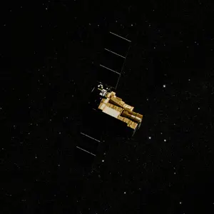

Space autonomy solutions
Penumbra Autonomy builds onboard perception, estimation and navigation that let spacecraft see, characterize and operate around uncooperative objects, without waiting on the ground.
A Georgia Tech spinout · Founded 2026
Our capabilities
The penumbra is the partial shadow between light and dark, and it is exactly where autonomous operations in orbit get hard. We build autonomy that works there, end to end, on off-the-shelf sensors.

Illumination-robust detection and tracking from a single onboard camera, in real time, as targets tumble through light and shadow.
Orbital-mechanics constraints turn what the camera sees into relative pose and rates, and recover target properties that cannot be measured from the ground.
Designed for accessible, low-SWaP-C sensing, so it can upgrade new builds and give deployed satellites new utility with the sensors they already carry.
Characterize shape, spin and mass properties of a target from large standoff distances.
Earlier go/no-go decisions, made at greater standoff, with lower collision risk.
Real-time relative navigation with no ground loop, through changing illumination, around targets with no prior model.
Adaptability in real time, no dependence on comms or GNSS, and it works with unknown targets.
Penumbra is the transition between light and shadow.